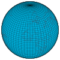

longitude

Definition: Longitude (, AU and UK also ) is a geographic coordinate that specifies the east–west position of a point on the surface of the Earth, or another celestial body. It is an angular measurement, usually expressed in degrees and denoted by the Greek letter lambda (λ). Meridians are imaginary semicircular lines running from pole to pole that connect points with the same longitude. The prime meridian defines 0° longitude; by convention the International Reference Meridian for the Earth passes near the Royal Observatory in Greenwich, south-east London on the island of Great Britain. Positive longitudes are east of the prime meridian, and negative ones are west.
Source: Wikipedia
Wikipedia Page
Wikidata Page